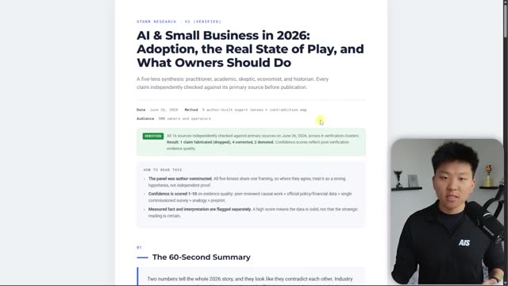
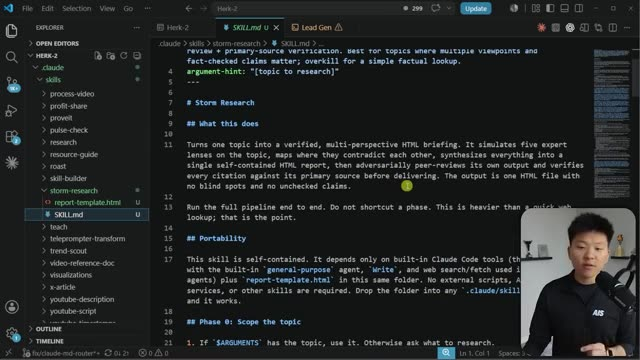
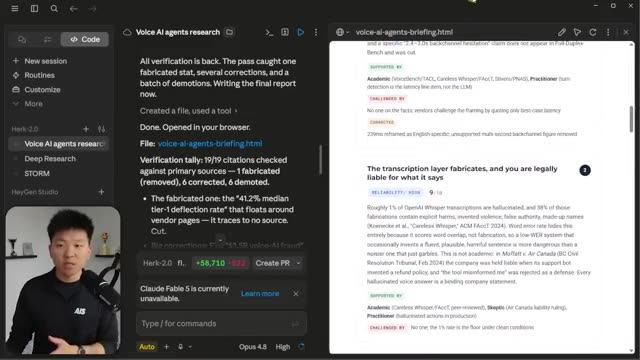

Конспект видео · Nate Herk | AI Automation · 2026-07-09 · 12 мин Video digest · Nate Herk | AI Automation · 2026-07-09 · 12 min
Метод Stanford STORM как скилл Claude: исследование пятью перспективами с верификацией Stanford's STORM method as a Claude skill: five-perspective research with verification
Смотреть видео ↗Watch the video ↗
STORM — исследовательский метод Стэнфорда, который в рецензируемом тестировании давал статьи на 25% организованнее ближайшего конкурента [00:00]. Нейт Херк упаковал его принципы в скилл Claude и показывает результат: самодостаточный HTML-брифинг, собранный пятью «взглядами» и прошедший проверку фактов — внизу отчёта видно, какие источники подтверждены, какие исправлены, а какие понижены в надёжности [00:22]. STORM is a Stanford research method that, in peer-reviewed testing, produced articles 25% better organized than the next best approach [00:00]. Nate Herk packaged its principles into a Claude skill and shows the result: a self-contained HTML briefing assembled by five "lenses" and fact-checked — the report's footer shows which sources were confirmed, corrected, or demoted [00:22].

В чём методThe method itself
Идея STORM: один промпт — это один угол зрения, и у него неизбежны слепые зоны. Вместо этого тема исследуется пятью ролевыми агентами — практик, академик, скептик, экономист и историк — и «каждый угол находит дыру, которую пропустили остальные» [00:50]. Дальше конвейер: (1) пять перспектив исследуют тему параллельно; (2) строится карта противоречий — где взгляды расходятся и чьи доказательства сильнее [04:57]; (3) синтез в единый отчёт; (4) адверсариальное пир-ревью собственных выводов и сверка каждой цитаты с первоисточником. Изначально это были четыре промпта, которые автор запускал цепочкой вручную, — а затем попросил Claude упаковать всё в скилл с шаблоном отчёта: теперь достаточно фразы «storm research по теме X» [05:20]. STORM's premise: one prompt is one angle, and it inevitably has blind spots. Instead the topic is researched by five role-played agents — a practitioner, an academic, a skeptic, an economist, and a historian — and "each angle finds a hole the other angles miss" [00:50]. The pipeline: (1) five lenses research in parallel; (2) a contradiction map — where the lenses disagree and whose evidence is stronger [04:57]; (3) synthesis into a single report; (4) adversarial peer review of its own conclusions plus verification of every citation against its primary source. It started as four manually chained prompts — then the author asked Claude to package the whole thing into a skill with a report template: now the phrase "storm research on topic X" is enough [05:20].

Сравнение со встроенным deep researchVersus built-in deep research
Автор прогнал один и тот же вопрос через нативный deep research Claude (динамический workflow, в его случае — 103 агента) и через STORM-скилл (~12 агентов). Deep research вернул «сырой» markdown с двумя подтверждёнными источниками и попал под рейт-лимиты [01:40]; STORM — верифицированный брифинг с 60-секундным резюме, выводами с оценкой надёжности (какая линза поддержала, какая оспорила) и явным списком допущений, включая «недостающую шестую линзу» — взгляд клиента, который ни одна из пяти ролей не закрывала [02:49]. Слепое сравнение через Codex (другую модель) отдало победу STORM по всем шести критериям — при этом прогон был быстрее и дешевле [03:40]. The author ran the same question through Claude's native deep research (a dynamic workflow — 103 agents in his run) and through the STORM skill (~12 agents). Deep research returned a raw markdown dump with two confirmed sources and hit rate limits [01:40]; STORM produced a verified briefing with a 60-second summary, findings ranked by reliability (which lens supported, which challenged) and an explicit assumptions list — including the "missing sixth lens": the customer's seat, which none of the five roles covered [02:49]. A blind comparison via Codex (a different model) scored STORM ahead on all six criteria — while running faster and cheaper [03:40].

Практика и ограниченияPractice and limits
Скилл работает и без слэш-команды — достаточно упомянуть его в запросе; при размытой теме он сам задаст уточняющие вопросы [07:18]. Роли выполняются субагентами (у автора — на Opus 4.8, но подойдут Sonnet/Haiku), и автор подчёркивает разницу: субагенты общаются только с главной сессией, а «команды агентов» умеют спорить друг с другом до консенсуса — это мощнее, но заметно дороже [08:35]. Главный совет — не в конкретном скилле: линзы стоит подгонять под себя (автору напрашивается «новичок в ИИ» и «контент-мейкер»), а общий принцип — «если нет своей экспертизы, одолжи её: создай маленьких экспертов-агентов, которые закроют твои слепые зоны» [11:24]. The skill triggers without a slash command — mentioning it in a request is enough; with a vague topic it asks clarifying questions first [07:18]. The roles run as subagents (Opus 4.8 in the author's runs, but Sonnet/Haiku work too), and he stresses the distinction: subagents only talk to the main session, while "agent teams" can argue with each other to consensus — more powerful, but noticeably pricier [08:35]. The main advice isn't about this particular skill: tailor the lenses to yourself (the author is tempted by an "AI beginner" and a "content creator"), and the general principle — "if you lack subject-matter expertise, borrow it: spawn small expert agents to kill your blind spots" [11:24].
Конспект построен по субтитрам; кадры извлечены по таймкодам, отобранным из транскрипта. Digest built from subtitles; frames extracted at timestamps picked from the transcript.